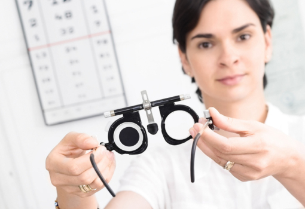
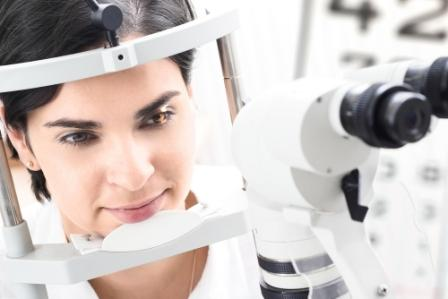
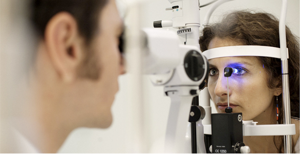
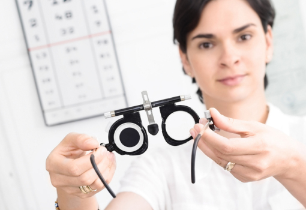
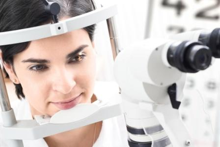
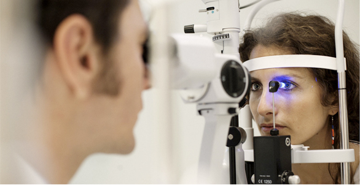
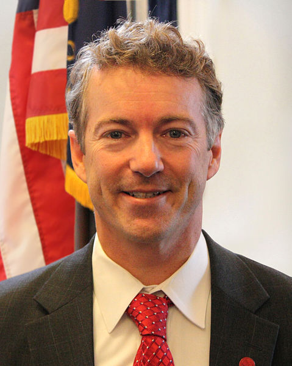

Dottor Salvatore Coppola
Oculista - Avellino


 







|

Salvatore Coppola
|
Randal Howard "Rand" Paul (Pennsylvania, 7 gennaio 1963) è un oculista e politico statunitense. Rand Paul si definisce un "conservatore costituzionale."è il fondatore e presidente del Kentucky Taxpayers United. Egli è anche il figlio del repubblicano del Congresso Ron Paul del Texas. Nel mese di agosto 2009, Paul ha ufficialmente annunciato la sua candidatura per il Senato, incarico in quel momento occupato dal senatore uscente Jim Bunning del Kentucky. Paul, ha vinto le elezioni primarie del partito il 18 maggio 2010. Egli ha affrontato Jack Conway nelle elezioni generali del 2 novembre 2010 ed è stato eletto senatore. I genitori di Rand, Carol Wells Paul e Ron Paul si sposarono, nel 1957. Randal è nato in Pennsylvania nel 1963. Ha quattro fratelli: Ronnie, Lori, Robert, e Joy. La famiglia di Paul si spostò da Pittsburgh a San Antonio nel 1965, per stabilirsi infine a Surfside Beach, in Texas nel 1968. Nel 1976, il padre è stato eletto alla Camera dei Rappresentanti. Paul studiò alla Baylor University a Waco, in Texas dal 1981 al 1984. Randal Howard "Rand" Paul (Pennsylvania, 7 gennaio 1963) è un oculista e politico statunitense. Rand Paul si definisce un "conservatore costituzionale."è il fondatore e presidente del Kentucky Taxpayers United. Egli è anche il figlio del repubblicano del Congresso Ron Paul del Texas. Nel mese di agosto 2009, Paul ha ufficialmente annunciato la sua candidatura per il Senato, incarico in quel momento occupato dal senatore uscente Jim Bunning del Kentucky. Paul, ha vinto le elezioni primarie del partito il 18 maggio 2010. Egli ha affrontato Jack Conway nelle elezioni generali del 2 novembre 2010 ed è stato eletto senatore. I genitori di Rand, Carol Wells Paul e Ron Paul si sposarono, nel 1957. Randal è nato in Pennsylvania nel 1963. Ha quattro fratelli: Ronnie, Lori, Robert, e Joy. La famiglia di Paul si spostò da Pittsburgh a San Antonio nel 1965, per stabilirsi infine a Surfside Beach, in Texas nel 1968. Nel 1976, il padre è stato eletto alla Camera dei Rappresentanti. Paul studiò alla Baylor University a Waco, in Texas dal 1981 al 1984. Randal Howard "Rand" Paul (Pennsylvania, 7 gennaio 1963) è un oculista e politico statunitense. Rand Paul si definisce un "conservatore costituzionale."è il fondatore e presidente del Kentucky Taxpayers United. Egli è anche il figlio del repubblicano del Congresso Ron Paul del Texas. Nel mese di agosto 2009, Paul ha ufficialmente annunciato la sua candidatura per il Senato, incarico in quel momento occupato dal senatore uscente Jim Bunning del Kentucky. Paul, ha vinto le elezioni primarie del partito il 18 maggio 2010. Egli ha affrontato Jack Conway nelle elezioni generali del 2 novembre 2010 ed è stato eletto senatore. I genitori di Rand, Carol Wells Paul e Ron Paul si sposarono, nel 1957. Randal è nato in Pennsylvania nel 1963. Ha quattro fratelli: Ronnie, Lori, Robert, e Joy. La famiglia di Paul si spostò da Pittsburgh a San Antonio nel 1965, per stabilirsi infine a Surfside Beach, in Texas nel 1968. Nel 1976, il padre è stato eletto alla Camera dei Rappresentanti. Paul studiò alla Baylor University a Waco, in Texas dal 1981 al 1984. |